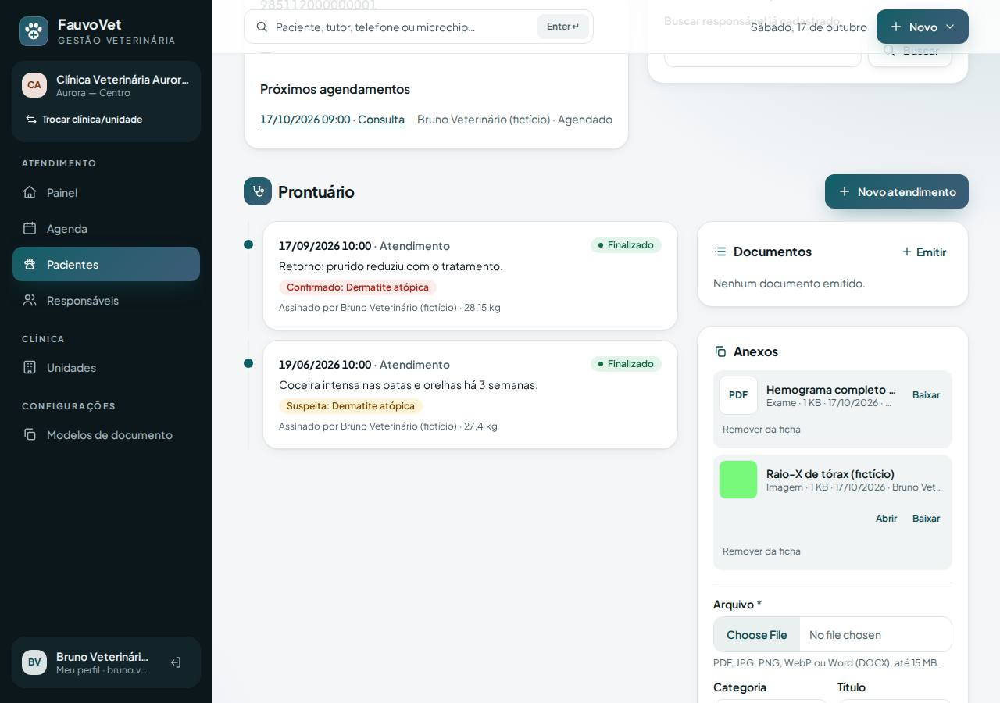

Anexos do prontuário: exames, imagens e documentos guardados com segurança
ID: 2026-10-18-anexos · Data: 18/10/2026 · Versão: 0.8.0 · Módulo: D. Prontuário (anexos) · F. Exames (arquivos) · Estado: implementado e testado localmente; publicação a cargo do proprietário (seção 7)
1. Objetivo
Guardar no prontuário os arquivos que chegam à clínica (resultados de laboratório, raio-X, fotos de lesões, laudos de outros serviços), ligados ao paciente e, se quiser, ao atendimento. Os critérios:
- só tipos seguros, conferidos pelo conteúdo;
- arquivos fora da área pública;
- download só por quem tem acesso, com registro;
- nada é apagado de verdade;
- nada é visível para outra clínica.

2. O que mudou
Para quem usa
- Painel "Anexos" na seção Prontuário da ficha do paciente e no atendimento. No atendimento, o arquivo fica ligado àquela consulta.
- Enviar: escolha o arquivo (PDF, JPG, PNG, WebP ou Word DOCX, até 15 MB), a categoria (Exame, Imagem, Documento, Outro) e, se quiser, um título; sem título, usa o nome do arquivo.
- Abrir: imagens aparecem em miniatura e abrem no navegador. PDF e Word são baixados: arquivos de terceiros nunca são exibidos dentro do sistema.
- Remover da ficha: com motivo. O anexo some da ficha, mas o arquivo original continua guardado para histórico. Só quem enviou ou o titular pode remover.
- Arquivo recusado: aparece "Tipo de arquivo não aceito…". Exemplos: um
.phprenomeado para.pdf, HTML com extensão.png, SVG, executável, ZIP qualquer.
Segurança
- Tipo verificado pelo conteúdo (assinatura do arquivo), que precisa bater com a extensão.
- Armazenamento:
- nome no disco aleatório, em
storage/app/private/attachments/{clínica}/{ano}/, fora dopublic_html; - o nome original é guardado, já sem caminho ("../") e sem caracteres perigosos;
- o SHA-256 é conferido a cada download; arquivo alterado no disco não é entregue.
- nome no disco aleatório, em
- Resposta do download com
nosniff, sem cache e com políticasandbox: mesmo que um navegador tente interpretar o arquivo, nada é executado. - Quem pode: envio, abertura e download só pela equipe clínica (veterinário, assistente, titular). Recepção e financeiro não têm acesso. Cada envio, download e remoção fica registrado.
- Limite: 120 envios por hora por usuário.
- Sem antivírus na hospedagem compartilhada: a proteção vem da lista fechada de tipos, de nunca executar arquivos e do download forçado (veja IDEAS e SECURITY).
Correções de layout encontradas pelos testes
- Zoom automático no celular: campos com fonte menor que 16 px faziam o Chrome do celular dar zoom e deslocar a tela. Corrigido em 5 campos.
- Grades responsivas sem coluna única definida (25 telas) podiam alargar o conteúdo no celular; agora têm
grid-cols-1como base. - Botões fora da tela: no celular, o "Baixar" do anexo ficava cortado; agora quebra para a linha de baixo.
- Teste novo: a checagem de acessibilidade agora reprova qualquer conteúdo visível que passe da borda da tela no celular.
Arquivos
- Migração:
2026_10_18_000001_create_attachments_table. - Código:
app/Files/FileTypeDetector.php,app/Services/AttachmentService.php,app/Http/Controllers/AttachmentController.php,app/Models/Attachment.php(imutável), viewattachments/_panel. - Infraestrutura:
SecurityHeadersrespeita uma CSP mais restrita definida pela resposta;config/fauvovet.php→attachments.max_kb(padrão 15360);deploy/public/.user.ini(limites de upload 16 MB/20 MB, levado pelo pacote);- servidor de desenvolvimento com os mesmos limites;
- o diagnóstico de deploy mostra
upload_max_filesizeepost_max_size.
- Testes:
AttachmentTest(16, com 7 tipos maliciosos e 2 de isolamento), E2Eattachments.spec.ts, checagem de borda no celular.
Dependências novas: nenhuma.
3. Pré-requisitos
Servidor com a extensão PHP fileinfo (já exigida pelo diagnóstico) e a pasta storage/app/private gravável. Para arquivos de até 15 MB, o PHP precisa aceitar uploads desse tamanho; o arquivo .user.ini enviado na pasta pública cuida disso.
Git Bash/macOS: NOT RUN.
4. Passo a passo (no seu computador)
cd ~/code/fauvovet→git pull --ff-only→pnpm db:start→pnpm db:migratepnpm dev→ entre comobruno.vet@aurora.exemplo.test→ paciente Thor → Prontuário → Anexos.
5. Como testar
Automático
pnpm verify --e2e
pnpm test:tenant-isolationManual
- Como Bruno:
- envie uma foto (JPG/PNG): aparece a miniatura, e "Abrir" mostra a imagem;
- envie um PDF: só há "Baixar", e o arquivo baixa com o nome original;
- renomeie um arquivo de texto para
.pdfe tente enviar: "Tipo de arquivo não aceito".
- Abra um atendimento e envie um anexo por lá: ele aparece no atendimento e também na ficha.
- Use "Remover da ficha" com um motivo: o anexo some da ficha.
- Como Carla (recepção): nenhum painel de anexos, e o endereço
/anexos/{id}responde 403. - Como Diana (clínica B): o mesmo endereço responde 404.
6. Performance e usabilidade
- Desempenho: o envio e o download leem o arquivo inteiro uma vez (para o SHA-256), o que é desprezível até 15 MB. Miniaturas usam a própria imagem com
loading="lazy"e tamanho fixo (sem salto de layout). A ficha do paciente faz só 1 consulta a mais (até 60 anexos). - Celular: todos os campos com fonte de 16 px (sem zoom automático); a nova checagem garante que nada passa da borda da tela.
- Acessibilidade: o axe (WCAG 2.2 AA) não acusou violações nas telas com anexos.
7. Implantação na Locaweb (1 migração + arquivo .user.ini)
- Terminal:
cd ~/code/fauvovet→git pull --ff-only→pnpm db:start→pnpm verify --e2e→pnpm deploy:package→pnpm deploy:copiar - Painel Locaweb: backup (exportação) do banco.
- Terminal:
pnpm deploy:token. - FileZilla:
.envcomDEPLOY_TOOLS_ENABLED=true+ linha nova do token → enviar → apagarbootstrap/cache/config.php(se existir). - FileZilla:
C:\fauvovet-deploy\app-fauvovet→/app-fauvovet, tudo excetostorage, com Sobrescrever. - FileZilla:
C:\fauvovet-deploy\public_html\fauvovet→/public_html/fauvovet, com Sobrescrever. Confira que o.user.inifoi enviado (é um arquivo oculto; precisa estar marcado "Forçar exibição de arquivos ocultos"). - Terminal (sem HTTPS:
http+export FAUVOVET_ALLOW_HTTP=1):export FAUVOVET_DEPLOY_TOKEN='TOKEN_NOVO' pnpm deploy:remote https://dradeboragaldino.com.br/fauvovet diagnostico # confira: pending_migrations: 1 · private_storage_writable: true # upload_max_filesize: "16M" · post_max_size: "20M" (pode levar até 5 min para o .user.ini valer) pnpm deploy:remote https://dradeboragaldino.com.br/fauvovet migrar # exit_code: 0 pnpm deploy:remote https://dradeboragaldino.com.br/fauvovet otimizar # tudo 0 - FileZilla:
DEPLOY_TOOLS_ENABLED=false→ enviar → apagarbootstrap/cache/config.php. - Terminal:
SMOKE_URL=https://dradeboragaldino.com.br/fauvovet pnpm smoke(5 PASS) →unset FAUVOVET_DEPLOY_TOKEN FAUVOVET_ALLOW_HTTP - Navegador: num paciente fictício, envie uma imagem e um PDF e confira miniatura e download.
- Backup (rotina): além do banco e de
.../private/documents, baixe também/app-fauvovet/storage/app/private/attachments.
Se o diagnóstico continuar mostrando upload_max_filesize: "2M" (ou outro valor baixo) depois de 5 minutos, a hospedagem não está lendo o .user.ini. Arquivos maiores que esse valor serão recusados com "O arquivo não chegou ao servidor". Me avise: dá para ajustar o limite no painel da Locaweb ou reduzir o máximo no sistema.
Sem HTTPS válido, anexe apenas arquivos fictícios.
8. Rollback
- Código: reenvie o pacote anterior (
.deploy/fauvovet-7cf93a2) e rode o otimizar. A tabela e os arquivos podem ficar. - Banco: restaure o backup do passo 2. Os anexos enviados depois dele deixam de aparecer; os arquivos na pasta
attachmentspodem ser apagados. .user.ini: pode ficar (só aumenta o limite de upload) ou ser apagado pelo FileZilla.- Local:
git revertdo commit enode scripts/php.mjs artisan migrate:rollback --step=1(só no banco de desenvolvimento).
9. Troubleshooting
| Sintoma | Causa e solução |
|---|---|
| "Tipo de arquivo não aceito…" | O arquivo não é PDF, JPG, PNG, WebP ou DOCX de verdade (ou a extensão não confere). Fotos do iPhone em HEIC precisam ser convertidas para JPG. |
| "O arquivo não chegou ao servidor…" | Maior que o limite do PHP do servidor. Veja upload_max_filesize no diagnóstico. |
| "Arquivo maior que 15 MB" | Limite do sistema. Comprima o PDF ou reduza a imagem. |
| Erro 500 ao baixar | O arquivo sumiu ou foi alterado no disco (o hash não confere). Restaure storage/app/private/attachments do backup. |
| Não vejo o painel de Anexos | Só a equipe clínica vê. Confira o papel em Equipe. |
| "Remover da ficha" dá erro 403 | Só quem enviou ou o titular pode remover. |
10. Evidências e status
| Verificação | Status | Detalhe |
|---|---|---|
pnpm verify --e2e | PASS | 9/9 etapas |
| PHPUnit | PASS | 143 testes / 1.257 asserções (16 novos de anexos) |
| Arquivos maliciosos recusados | PASS | PHP como .pdf, HTML como .png, PDF como .png, SVG, EXE, ZIP como .docx, TXT |
| Isolamento | PASS | 35 testes (2 novos: anexo de outra clínica → 404; FK composta recusa anexo cruzado) |
| E2E (desktop + celular) | PASS | 61 passaram + 1 ignorado de propósito; checagem de borda no celular em todas as telas do axe |
.user.ini lido pela Locaweb | NOT RUN | Conferir no diagnóstico (seção 7) |
Commit: registrado no docs/PROGRESS.md após a sincronização.
Próximo passo sugerido: vacinação. Catálogo de vacinas e protocolos por espécie, registro com lote, fabricante, validade e local de aplicação, carteira de vacinação e próximas doses (com aviso de atraso).